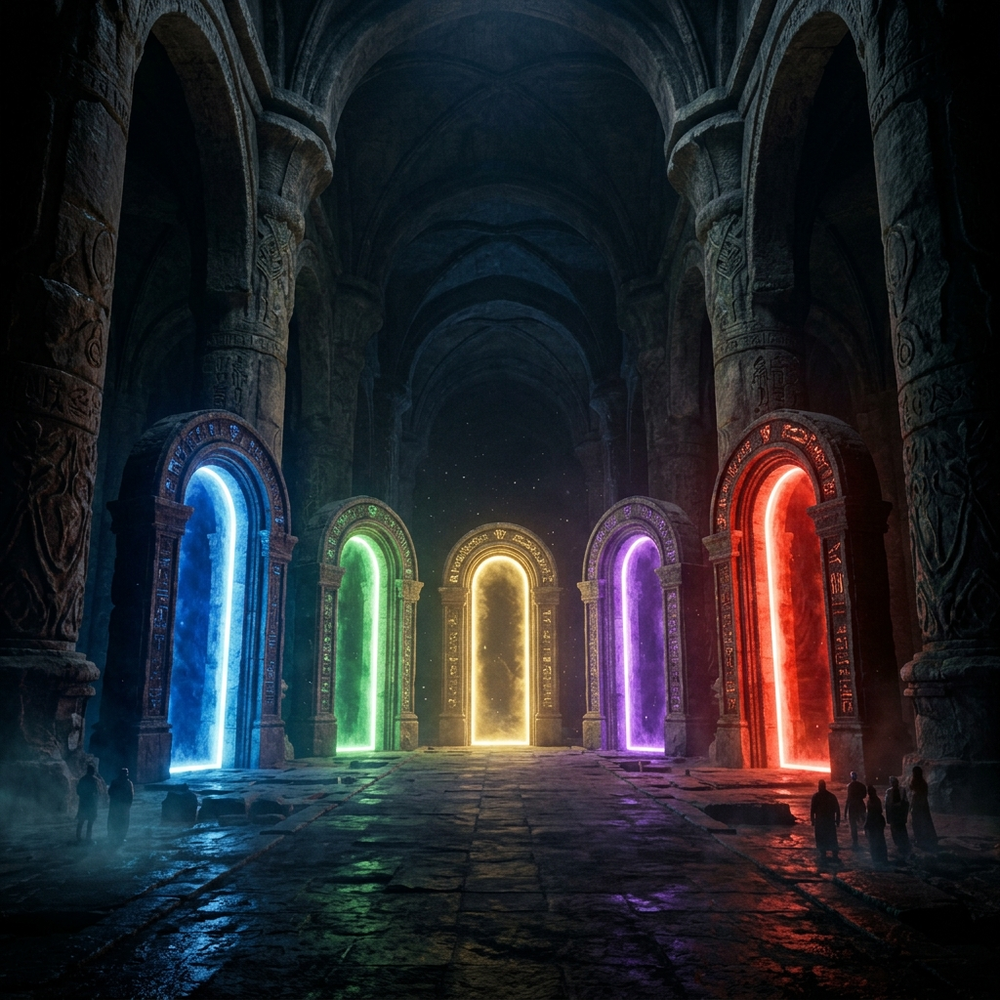
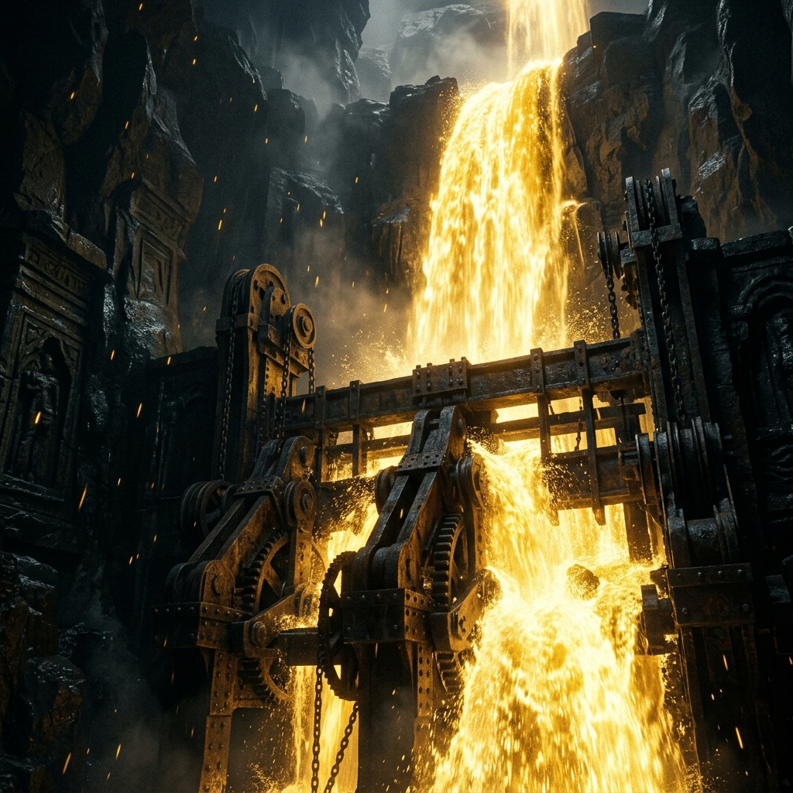
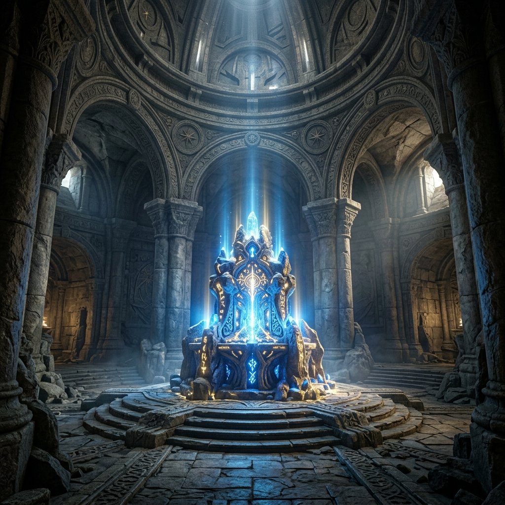

Masterclass Module
THE MYSTERY OF
PRAYER
The Control Room of Dominion
Prayer is not a distress signal to force God to abandon the script He wrote. It is an intelligent dominion system designed to shift you completely out of the script the enemy arranged, and perfectly back into the exact reality God authored.
🔑 The One-Line Thesis
"God is completely unlimited and sees all realities at once. When you pray, you are simply telling Him: I refuse to stay in this version. Move me into Yours."
🎬 The Movie Analogy (SIMULATION)
Imagine a movie where you are the main character. God wrote the original script. By default, without prayer, the reality you are living is often the one circumstances produced or the enemy arranged. Prayer does not write a new movie—it overrides the hijack and shifts you into the Authored Script.
TIMELINE ALIGNMENT PROTOCOL
The Insight: Prayer is a navigation system, not a rescue operation. You use it constantly so you never end up in a timeline God did not write.
🗺 The Five Dimensions [Architecture]
Most believers treat prayer as one single activity. But Ephesians 6:18 speaks of "all prayer"—meaning a highly specific, multi-dimensional system. Tap each dimension below to uncover its specific mechanism.

⛔ Deep Dives: The 4 Blockades
Why does the miraculous seemingly elude sincere believers? It is not because God is unwilling—it is because something on the human side is blocking the flow of the very things we ask for.

1. VAGUE EXPECTATION (THE BLIND MAN)
Jesus asked Blind Bartimaeus: "What do you want Me to do for you?" The need was obvious. Yet Jesus required him to articulate it. Without a specific defined target, the energy generated in prayer dissipates without taking form.
2. SPIRITUAL INSENSITIVITY (BETHESDA)
Healing was available at the Pool of Bethesda, but only to the one who recognised the exact moment the water was stirred. A believer whose spiritual senses are dulled by distraction will consistently miss the time of visitation.
3. CONDITIONAL FAITH (NAAMAN)
Naaman almost turned away an entire miraculous healing because washing in the Jordan River offended his expectation of how the answer should look. True faith is absolutely expectant of the outcome, but completely flexible about the method.
4. FAILURE TO TESTIFY (THE 9 LEPERS)
When ten lepers were healed, all received cleansing. But only the one who returned to give thanks was made whole. Dismissing the small movements of God while waiting for huge ones blocks the completion of the miracle.
🔒 The Secret Place (SIMULATION)
Your flesh does not want to pray. This is not a spiritual failure; it is biological. You overcome the flesh not by pretending it doesn’t resist, but by systematically subjugating it using specific spiritual locks.
FLESH SUBJUGATION PROTOCOL
(Worship)
(Projects)
(Denial)
🪞 The Control Room Audit
The secret place is a Control Room. The person who uses it consistently does not navigate life reactively. They arrange reality before they ever step into it. The resources and opportunities are already established by their coordinates.

Are you reacting to the chaos of your day, or are you utilizing the Control Room to arrange reality before you step into it?
Which of the 5 Dimensions of Prayer (Spirit, Inquiry, Declaration, Warfare, Thanksgiving) is entirely missing from your arsenal?
What massive prayer projects are you carrying that are large enough to require spiritual intelligence, rather than just asking for survival?
🔥 The Closing Declaration
THE DOOR IS SHUT
"I refuse to live in the movie the enemy arranged. I am shifting into the exact reality my God authored. I will subjugate my flesh, I will utilize the 5 dimensions, and I will arrange my day from the Control Room."